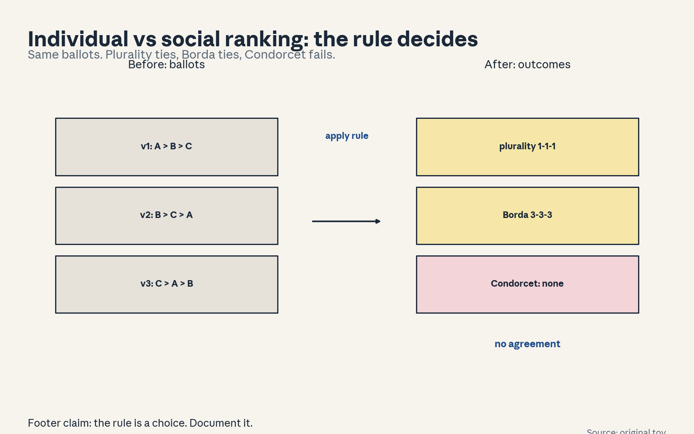
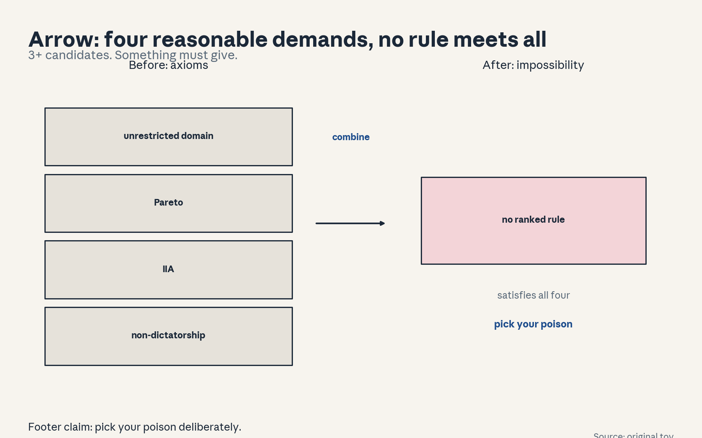
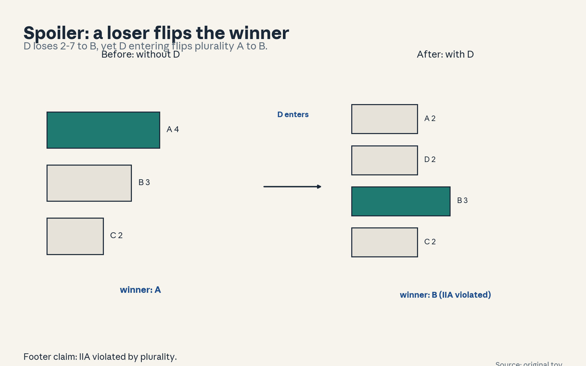
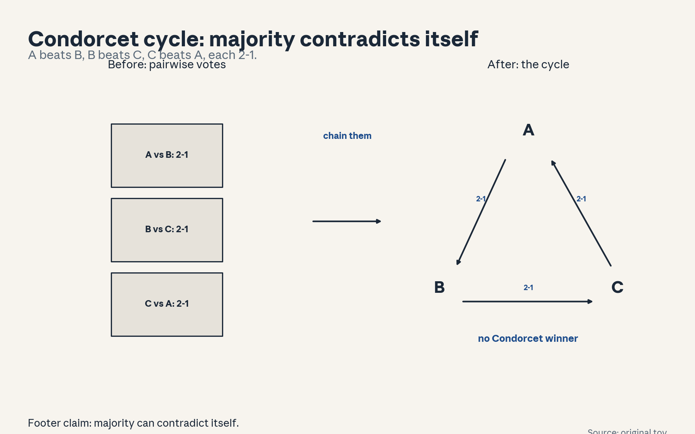
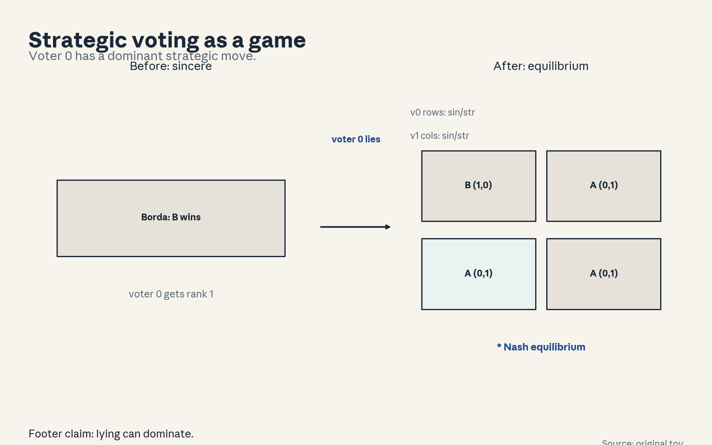
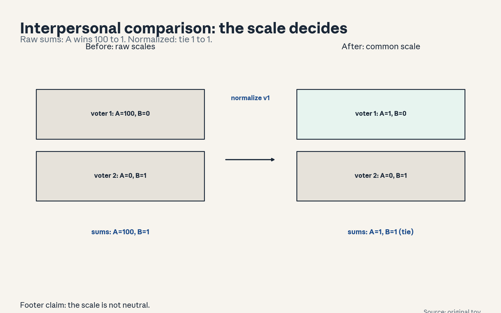
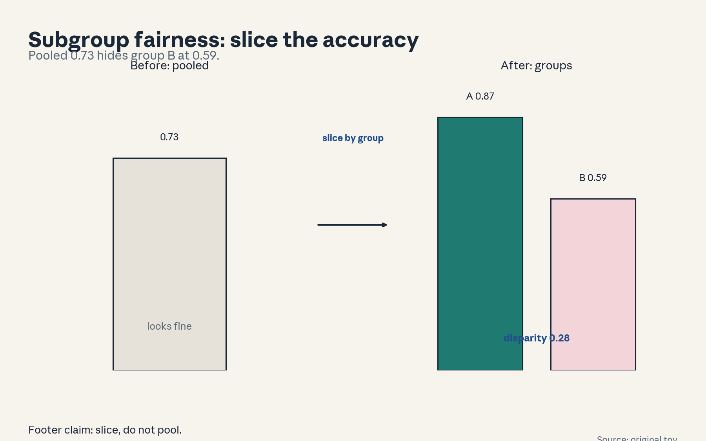
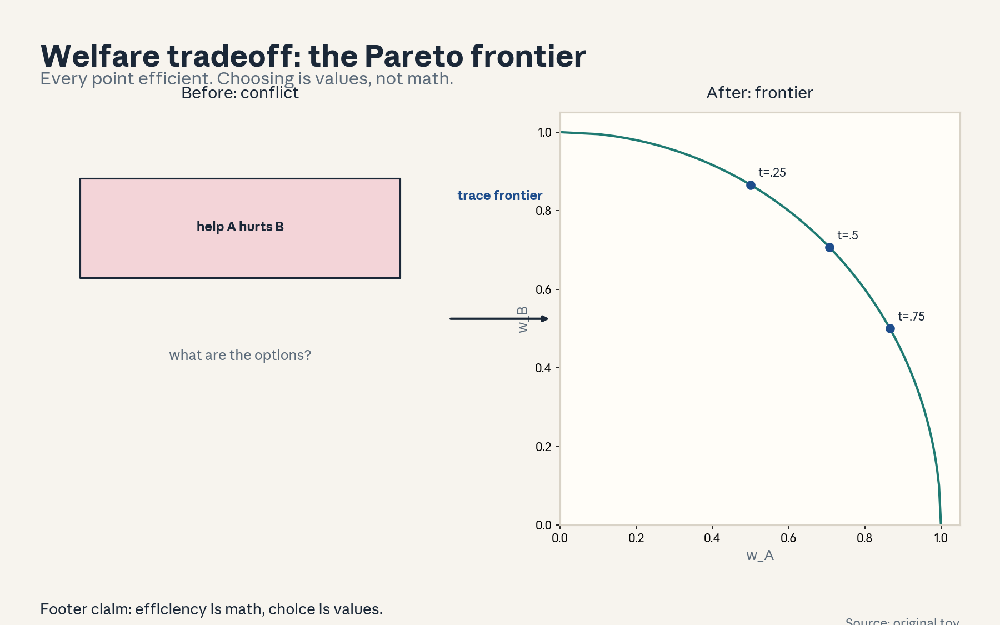

U09 · Aggregation, impossibility, and fairness
U09: Aggregation, impossibility, and fairness
Prerequisites: P06 (probability), P07 (statistical estimation), P22 (experimental method). Local remediation opens this lesson.
Provenance
Sessions S16 (“Impossibilities: Gibbard-Satterthwaite and Arrow”, 16 Nov 2026) and S17 (“Fairness and information aggregation”, 18 Nov 2026) are PLANNED. All twelve concepts are taught as independent theory: PLANNED / SOURCE ATTRIBUTION PENDING.
Local remediation: voting rules, strategyproofness, Pareto
Voting rules: plurality (most first-place votes), Borda (points by rank: 2 for first, 1 for second, 0 for third), Condorcet (the candidate that beats all others pairwise). Different rules give different winners from the same ballots.
Strategyproofness: no voter can get a better outcome by misreporting. Gibbard-Satterthwaite: with 3+ outcomes, no non-dictatorial deterministic rule is strategyproof.
Pareto: outcome X Pareto-dominates Y if someone prefers X and nobody prefers Y. Pareto efficiency: the chosen outcome is not dominated.
Russian-doll ladder for the major mechanism (the Condorcet cycle)
- Shell 0: Can majority rule contradict itself?
- Shell 1: Toy: 3 voters, 3 candidates A, B, C. Ballots: A>B>C, B>C>A, C>A>B.
- Shell 2: Pairwise majorities: A beats B 2-1, B beats C 2-1, C beats A 2-1.
- Shell 3: Rule: majority is pairwise, not global. The cycle A>B>C>A has no winner.
- Shell 4: Compute the three margins. Implement the tournament.
- Shell 5: Check: each margin is 2-1. Check: adding two A>B>C ballots breaks the cycle (margins +3, +3, +1).
- Shell 6: Counterexample to ‘majority always works’: the cycle itself.
- Shell 7: Compare: Borda 3-3-3 tie vs plurality 1-1-1 tie vs Condorcet no winner. All ‘fair’, all different.
- Shell 8: Extension: how often do cycles occur in random profiles? Falsifiable: simulate (here 0.081 for 11 voters, seed 0, numpy legacy np.random.RandomState).
- Shell 9: Production: any deployed ranking (search, recommendations) picks a rule. The rule is a normative choice (C09), not a discovery.
Not-yet-understood dependency list
- Full Arrow proof (statement plus intuition here).
- Computational social choice complexity (named only).
- Welfare economics beyond the toy (named only).
cs329h-U09-C01: individual versus social ranking
Contract 1. Source mapping, scope, objectives, dependencies. PLANNED / SOURCE ATTRIBUTION PENDING (S16). Objective: separate individual ballots from the social outcome. Depends on P06.
Contract 2. Motivating question and tiny toy. Question: three voters disagree. What does “the group” want? Toy: ballots A>B>C, B>C>A, C>A>B.
Contract 3. Plain-language mental model. Individual rankings are inputs, the social ranking is the output of a rule. The rule is a choice, and different rules give different “group wants”.
Contract 4. Variables, units, shapes, assumptions. Profile: n voters x ranking over m candidates. Rule f: profile -> outcome. Assumption: voters report sincerely (relaxed in C05).
Contract 5. Justified derivation or mechanism. On the toy: plurality 1-1-1 tie, Borda 3-3-3 tie, Condorcet no winner. Three rules, no agreement. “The group want” is undefined without the rule.
Contract 6. Computed numerical example. Tallies computed: plurality {A:1, B:1, C:1}, Borda {A:3, B:3, C:3}, Condorcet none. Same numbers as figure u09_f01.
Contract 7. Algorithm and minimal implementation. Tally plurality, Borda, Condorcet from ballots. Fifteen lines.
Contract 8. Correctness checks and expected output. Check: plurality sums to 3, Borda sums to 9. Expected: u09_f01.
Contract 9. Complexity, memory, statistical efficiency, stability, costs. O(n m log m) for Borda.
Contract 10. Nearest alternatives and selection boundaries. Alternative: declare the rule by fiat (common in products). Alternative: ask for cardinal scores (richer ballots). Choose the rule deliberately and document it.
Contract 11. Failure case, broken assumption, counterexample. Failure: the rule is chosen after seeing the ballots to favor a candidate. Counterexample: pick Borda because it elects your favorite.
Contract 12. Research reading and falsifiable extension. Extension: test how often the three rules disagree on random profiles. Falsifiable: measure it.
Contract 13. Assessment. Breadth: name the three rules. Oral ladder through the tallies. Transfer: ranking job candidates by a panel. Failure diagnosis: the “winner” changes with the rule. Explain. Counterfactual: what if ballots were unanimous? Research: rule selection principles.
Contract 14. Lab and exercises. Lab U09 task 1 tallies the toy. Exercises: (E1) compute the three tallies. (E2) explain the disagreement. (E3) argue the after-the-fact failure. Keys in answer_keys/u09_keys.md.
Contract 15. Visual units, provenance, accessibility, audit rows. Figure visuals/u09_f01.png: lesson plate, source original toy, alt text “Three ballots listed. Arrows to three rule boxes: plurality 1-1-1, Borda 3-3-3, Condorcet no winner.” Audit: before state ballots, after state outcomes, rule named. No conflict.

cs329h-U09-C02: Arrow assumptions
Contract 1. Source mapping, scope, objectives, dependencies. PLANNED / SOURCE ATTRIBUTION PENDING (S16). Objective: state Arrow’s conditions and the impossibility. Depends on C01.
Contract 2. Motivating question and tiny toy. Question: is there a perfect voting rule? Toy: the four conditions tested on a spoiler profile.
Contract 3. Plain-language mental model. Arrow: with 3+ candidates, no ranked voting rule satisfies all of: unrestricted domain, Pareto, IIA (independence of irrelevant alternatives), non-dictatorship. Something must give.
Contract 4. Variables, units, shapes, assumptions. UD: any profile allowed. Pareto: unanimous pairwise preference respected. IIA: the relative order of A, B depends only on A-vs-B ballots. Non-dictatorship: no single voter always decides. (This IIA differs from the choice IIA of U02-C05.)
Contract 5. Justified derivation or mechanism. Proof intuition: IIA + Pareto force a “swing voter” whose ballot swings some pair, that voter becomes decisive on all pairs: a dictator. Contradiction with non-dictatorship.
Contract 6. Computed numerical example. Spoiler computed: without D, plurality elects A (4-3-2). D enters, loses pairwise to B 2-7, yet plurality flips to B (A2 D2 B3 C2). Adding a loser changed the winner: IIA violated.
Contract 7. Algorithm and minimal implementation. Check which rules violate which condition on examples. Table.
Contract 8. Correctness checks and expected output. Check: the spoiler example flips the plurality winner. Expected: the table in u09_f03.
Contract 9. Complexity, memory, statistical efficiency, stability, costs. O(1) for the statement, the proof is the cost (not reproduced here).
Contract 10. Nearest alternatives and selection boundaries. Alternative: relax IIA (most practical rules do). Alternative: restrict domain (single-peaked). Alternative: cardinal ballots (range voting escapes via richer input). Choose the relaxation deliberately.
Contract 11. Failure case, broken assumption, counterexample. Failure: invoking “Arrow says voting is impossible” to justify an arbitrary rule. The theorem scopes ranked rules, it does not bless dictatorship.
Contract 12. Research reading and falsifiable extension. Extension: test single-peakedness on real ballot data (do cycles vanish?). Falsifiable: measure it.
Contract 13. Assessment. Breadth: recite the four conditions. Oral ladder through the spoiler. Transfer: a team picking a restaurant. Failure diagnosis: someone cites Arrow to end discussion. Explain. Counterfactual: what if only 2 candidates? Research: domain restrictions.
Contract 14. Lab and exercises. Lab U09 task 2 builds the spoiler. Exercises: (E1) recite the conditions. (E2) verify the flip. (E3) argue the misuse failure. Keys in answer_keys/u09_keys.md.
Contract 15. Visual units, provenance, accessibility, audit rows. Figure visuals/u09_f03.png: lesson plate, source original toy, alt text “Table of four axioms with one-line meanings. Impossibility statement below.” Audit: before state axioms, after state impossibility, rule named. No conflict.

cs329h-U09-C03: Gibbard-Satterthwaite assumptions
Contract 1. Source mapping, scope, objectives, dependencies. PLANNED / SOURCE ATTRIBUTION PENDING (S16). Objective: state GS and demonstrate manipulation. Depends on C01.
Contract 2. Motivating question and tiny toy. Question: can voters game the rule? Toy: Borda, profile (A>B>C, B>A>C, B>A>C), voter 0 misreports A>C>B (found by exhaustive search).
Contract 3. Plain-language mental model. Gibbard-Satterthwaite: with 3+ outcomes, every non-dictatorial deterministic rule is manipulable: some voter can profit by lying. Strategyproofness is unattainable in general.
Contract 4. Variables, units, shapes, assumptions. Strategyproof: sincere reporting is always optimal. Onto: every outcome achievable. Deterministic rule. Assumption: voters have strict preferences and vote to maximize their outcome.
Contract 5. Justified derivation or mechanism. Sincere Borda: A4 B5 C0, B wins (tie-break ballot order). Voter 0 (true A>B>C) reports A>C>B: A4 B4 C1, tie A/B, tie-break elects A. Voter 0 gains: A over B.
Contract 6. Computed numerical example. The found example with sincere outcome B, misreport A>C>B, new outcome A. Same numbers as figure u09_f04.
Contract 7. Algorithm and minimal implementation. Exhaustive search for manipulations. Fifteen lines.
Contract 8. Correctness checks and expected output. Check: the misreport strictly improves the voter outcome by their own ranking. Expected: u09_f04.
Contract 9. Complexity, memory, statistical efficiency, stability, costs. O(profiles x misreports). Tiny for 3x3.
Contract 10. Nearest alternatives and selection boundaries. Alternative: randomized rules (strategyproof in expectation, e.g. random dictator). Alternative: restricted domains. Choose by whether randomness is acceptable.
Contract 11. Failure case, broken assumption, counterexample. Failure: “strategyproof” claimed for a deterministic rule with 3+ outcomes: contradicts GS. Counterexample: any such claim.
Contract 12. Research reading and falsifiable extension. Extension: measure manipulation frequency over random profiles for Borda vs plurality. Falsifiable: count it.
Contract 13. Assessment. Breadth: state the theorem in one sentence. Oral ladder through the example. Transfer: bidding in an auction. Failure diagnosis: voters coordinate strategically. Explain. Counterfactual: what if only 2 outcomes? Research: approximate strategyproofness.
Contract 14. Lab and exercises. Lab U09 task 3 finds a manipulation. Exercises: (E1) state GS. (E2) verify the profitable misreport. (E3) argue the false claim failure. Keys in answer_keys/u09_keys.md.
Contract 15. Visual units, provenance, accessibility, audit rows. Figure visuals/u09_f04.png: lesson plate, source original toy, alt text “Sincere ballots with Borda totals A4 B5 C0, winner B. Strategic ballot A>C>B, totals A4 B4 C1, winner A.” Audit: before state sincere, after state strategic, rule named. No conflict.

cs329h-U09-C04: cycles
Contract 1. Source mapping, scope, objectives, dependencies. PLANNED / SOURCE ATTRIBUTION PENDING (S16). Objective: compute the Condorcet cycle and its consequences. Depends on C01.
Contract 2. Motivating question and tiny toy. Question: the ladder cycle again, now as the unit core. Toy: the 3x3 profile.
Contract 3. Plain-language mental model. A Condorcet cycle: A beats B, B beats C, C beats A, all by majority. No Condorcet winner exists. Majority rule contradicts itself.
Contract 4. Variables, units, shapes, assumptions. Margin matrix M_ij = #(i above j) - #(j above i). Cycle: M_AB, M_BC, M_CA all > 0. Assumption: odd voters or named tie-breaking.
Contract 5. Justified derivation or mechanism. The cycle is the concrete witness that “the majority will” can be incoherent. Any rule must break the symmetry somehow: tie-breaks, scoring, or agenda order.
Contract 6. Computed numerical example. Margins: A>B +1, B>C +1, C>A +1 (2-1 each). Adding two A>B>C ballots: +3, +3, +1, transitive A>B>C. Same numbers as figure u09_f02.
Contract 7. Algorithm and minimal implementation. Compute the margin matrix, detect the cycle. Ten lines.
Contract 8. Correctness checks and expected output. Check: M skew-symmetric, cycle detected. Expected: u09_f02.
Contract 9. Complexity, memory, statistical efficiency, stability, costs. O(n m^2).
Contract 10. Nearest alternatives and selection boundaries. Alternative: declare cycles impossible by fiat (wrong). Alternative: scoring rules (dissolve the cycle into numbers). Choose scoring when a total order is required.
Contract 11. Failure case, broken assumption, counterexample. Failure: the agenda (vote order) decides. Vote A-vs-B first, then winner vs C: C wins the tournament though no Condorcet winner exists. The procedure, not the voters, picks.
Contract 12. Research reading and falsifiable extension. Extension: simulate cycle frequency over random profiles (impartial culture): 0.081 for 11 voters here, seed 0, numpy legacy np.random.RandomState. Falsifiable: re-run the simulation with that RNG.
Contract 13. Assessment. Breadth: define the Condorcet winner. Oral ladder through the margins. Transfer: three friends picking a movie. Failure diagnosis: the vote agenda keeps changing the winner. Explain. Counterfactual: what if the profile were transitive? Research: cycle frequency.
Contract 14. Lab and exercises. Lab U09 task 4 computes margins and simulates cycle frequency. Exercises: (E1) define the winner. (E2) compute the margins. (E3) argue the agenda failure. Keys in answer_keys/u09_keys.md.
Contract 15. Visual units, provenance, accessibility, audit rows. Figure visuals/u09_f02.png: lesson plate, source original toy, alt text “Triangle A>B>C>A with 2-1 margins on each edge.” Audit: before state ballots, after state cycle, rule named. No conflict.

cs329h-U09-C05: strategic reports
Contract 1. Source mapping, scope, objectives, dependencies. PLANNED / SOURCE ATTRIBUTION PENDING (S16). Objective: model strategic voting as a game. Depends on C03.
Contract 2. Motivating question and tiny toy. Question: when everyone can lie, what happens? Toy: the C03 manipulation as a 2-player game (voter 0 vs voter 1, sincere/strategic each).
Contract 3. Plain-language mental model. Strategic voting is a game: each voter ballot is a move, the rule maps ballots to outcomes, voters maximize their own outcome. Equilibria can differ wildly from sincere outcomes.
Contract 4. Variables, units, shapes, assumptions. Players: voters. Strategies: ballots. Payoff: rank of the outcome in the voter true order (lower better). Assumption: common knowledge of the rule and of others preferences (strong).
Contract 5. Justified derivation or mechanism. Computed game: (sincere, sincere) -> B, payoffs (1, 0). Any profile with voter 0 strategic -> A, payoffs (0, 1). Voter 0 has a strictly dominant strategic move.
Contract 6. Computed numerical example. The 2x2 outcome table above (computed). Nash: voter 0 strategic. Same numbers as figure u09_f05.
Contract 7. Algorithm and minimal implementation. Enumerate strategy profiles, compute outcomes. Fifteen lines.
Contract 8. Correctness checks and expected output. Check: the equilibrium verified by best response. Expected: u09_f05.
Contract 9. Complexity, memory, statistical efficiency, stability, costs. O(strategies^voters). Explodes fast, toys only.
Contract 10. Nearest alternatives and selection boundaries. Alternative: assume sincerity (naive). Alternative: mechanism design (change the rule). Choose the game model when stakes justify it.
Contract 11. Failure case, broken assumption, counterexample. Failure: common-knowledge assumption fails, voters misjudge others and the “equilibrium” never occurs. Counterexample: voter 0 strategizes against a phantom.
Contract 12. Research reading and falsifiable extension. Extension: test how often sincere is already an equilibrium over random profiles. Falsifiable: count it.
Contract 13. Assessment. Breadth: what is a voter strategy? Oral ladder through the matrix. Transfer: bidding on eBay. Failure diagnosis: everyone votes strategically and all are worse off. Explain. Counterfactual: what if ballots were secret with no polls? Research: equilibrium selection.
Contract 14. Lab and exercises. Lab U09 task 5 builds the game. Exercises: (E1) define the payoff. (E2) find the equilibrium. (E3) argue the common-knowledge failure. Keys in answer_keys/u09_keys.md.
Contract 15. Visual units, provenance, accessibility, audit rows. Figure visuals/u09_f05.png: lesson plate, source original toy, alt text “2x2 payoff matrix. Rows voter 0, columns voter 1. Equilibrium at (strategic, sincere) marked.” Audit: before state sincere profile, after state equilibrium, rule named. No conflict.

cs329h-U09-C06: interpersonal comparison
Contract 1. Source mapping, scope, objectives, dependencies. PLANNED / SOURCE ATTRIBUTION PENDING (S17). Objective: explain why aggregating cardinal utilities needs comparable scales. Depends on U01-C04, U02-C10.
Contract 2. Motivating question and tiny toy. Question: your 8/10 and my 8/10: the same? Toy: voter 1: A=100, B=0. Voter 2: A=0, B=1.
Contract 3. Plain-language mental model. Cardinal aggregation (sums, averages) compares numbers across people. But utility scales are personal: rescaling one voter utilities changes the social outcome without changing anyone preferences. The comparison is meaningless without a common scale.
Contract 4. Variables, units, shapes, assumptions. Social welfare W = sum_i u_i(x). Invariance problem: W changes under per-voter affine rescaling. Assumption needed: comparable, calibrated scales (rarely true).
Contract 5. Justified derivation or mechanism. Raw sums: A=100, B=1: A wins by a mile. Normalize voter 1 to [0,1]: A=1, B=1: tie. A meaning-preserving rescale flipped the verdict from landslide to tie.
Contract 6. Computed numerical example. The numbers above. Same numbers as figure u09_f06.
Contract 7. Algorithm and minimal implementation. Compute sums under two normalizations. Five lines.
Contract 8. Correctness checks and expected output. Check: individual orders unchanged by rescaling. Expected: the flip in u09_f06.
Contract 9. Complexity, memory, statistical efficiency, stability, costs. O(voters).
Contract 10. Nearest alternatives and selection boundaries. Alternative: ordinal rules (no comparison problem, Arrow applies). Alternative: calibrated money (willingness to pay as the common scale). Choose ordinal when scales are unknowable. Choose money when stakes are monetary.
Contract 11. Failure case, broken assumption, counterexample. Failure: the “common scale” is imposed by fiat (e.g. everyone 0-10) and the outcome reflects the scale choice. Counterexample: 0-10 vs 0-100 elicitation flips a close sum.
Contract 12. Research reading and falsifiable extension. Extension: test sensitivity of the sum to the normalization on real survey data. Falsifiable: report the flip rate.
Contract 13. Assessment. Breadth: why is the sum meaningless without comparable scales? Oral ladder through the toy. Transfer: adding happiness across people. Failure diagnosis: the social choice flips when the survey scale changes. Explain. Counterfactual: what if a true common scale existed? Research: comparable welfare.
Contract 14. Lab and exercises. Exercises: (E1) compute both sums. (E2) explain the flip. (E3) argue the fiat-scale failure. Keys in answer_keys/u09_keys.md.
Contract 15. Visual units, provenance, accessibility, audit rows. Figure visuals/u09_f06.png: lesson plate, source original toy, alt text “Two voter scales. Raw sums 100 vs 1. Normalized sums 1 vs 1.” Audit: before state raw scales, after state normalized sums, rule named. No conflict.

cs329h-U09-C07: information aggregation
Contract 1. Source mapping, scope, objectives, dependencies. PLANNED / SOURCE ATTRIBUTION PENDING (S17). Objective: state when voting aggregates information well. Depends on P06.
Contract 2. Motivating question and tiny toy. Question: can a crowd be wiser than its members? Toy: 5 voters, each correct with prob 0.6 independently.
Contract 3. Plain-language mental model. Information aggregation: voters share a common goal (the truth) but get noisy signals. Majority vote can beat any individual: the Condorcet jury theorem.
Contract 4. Variables, units, shapes, assumptions. n odd voters, each correct with prob p > 0.5, independent. P(majority correct) = sum_{k>n/2} C(n,k) p^k (1-p)^{n-k}. Assumption: independence and competence (p > 0.5).
Contract 5. Justified derivation or mechanism. n = 5, p = 0.6: P = 0.6826. n = 101: 0.9791. The crowd converges to the truth as n grows, if the assumptions hold.
Contract 6. Computed numerical example. The two numbers above (binomial, computed). Same numbers in the text.
Contract 7. Algorithm and minimal implementation. Binomial tail. Five lines.
Contract 8. Correctness checks and expected output. Check: P increases in n and p. Check: p < 0.5 reverses (crowd converges to wrong). Expected: 0.6826, 0.9791.
Contract 9. Complexity, memory, statistical efficiency, stability, costs. O(n).
Contract 10. Nearest alternatives and selection boundaries. Alternative: follow the expert (better if one p is much higher). Alternative: weight by competence (needs known p). Choose majority when competence is symmetric and unknown.
Contract 11. Failure case, broken assumption, counterexample. Failure: correlated errors (common bias). The independence assumption is the fragile one. Counterexample: all voters watch the same misleading news: p effectively 0.4 for all, the crowd is confidently wrong.
Contract 12. Research reading and falsifiable extension. Extension: test the independence assumption on real voting data (correlation of errors). Falsifiable: correlated errors void the theorem.
Contract 13. Assessment. Breadth: state the jury theorem. Oral ladder through the numbers. Transfer: a panel of doctors. Failure diagnosis: the crowd is confidently wrong. Explain. Counterfactual: what if p < 0.5? Research: correlated juries.
Contract 14. Lab and exercises. Lab U09 task 6 computes the jury numbers. Exercises: (E1) write the formula. (E2) compute both numbers. (E3) argue the correlated-error failure. Keys in answer_keys/u09_keys.md.
Contract 15. Visual units, provenance, accessibility, audit rows. Text unit: the binomial numbers are worked in the text. No plate. Logged.
cs329h-U09-C08: subgroup fairness
Contract 1. Source mapping, scope, objectives, dependencies. PLANNED / SOURCE ATTRIBUTION PENDING (S17). Objective: measure preference-model performance by subgroup. Depends on U01-C12.
Contract 2. Motivating question and tiny toy. Question: the reward model pleases the majority. Who does it fail? Toy: two groups of 500, accuracies 0.87 and 0.59, pooled 0.73.
Contract 3. Plain-language mental model. Subgroup fairness: report preference prediction accuracy per group, not just pooled. A pooled number hides a failing minority.
Contract 4. Variables, units, shapes, assumptions. Accuracy_g = P(correct | group g). Disparity = max - min. Assumption: group labels exist and are reliable.
Contract 5. Justified derivation or mechanism. Pooled 0.73 looks fine, group B at 0.59 is near chance. The fix is data or modeling per group, not more pooled data.
Contract 6. Computed numerical example. The three numbers (computed on the toy). Same as figure u09_f07.
Contract 7. Algorithm and minimal implementation. Slice accuracy by group. Five lines.
Contract 8. Correctness checks and expected output. Check: pooled accuracy is the size-weighted mean. Expected: the bars in u09_f07.
Contract 9. Complexity, memory, statistical efficiency, stability, costs. O(n).
Contract 10. Nearest alternatives and selection boundaries. Alternative: pooled only (hides). Alternative: per-group models (costly). Choose slicing always, modeling per group when disparity is large and groups are stable.
Contract 11. Failure case, broken assumption, counterexample. Failure: groups are not the right slice, the real disparity hides inside a group. Counterexample: slicing by region misses the age disparity.
Contract 12. Research reading and falsifiable extension. Extension: test whether per-group thresholds close the gap on held-out data. Falsifiable: no close means the slice was not the issue.
Contract 13. Assessment. Breadth: define disparity. Oral ladder through the numbers. Transfer: a medical test across populations. Failure diagnosis: pooled accuracy high, complaints from one group. Explain. Counterfactual: what if one group? Research: fair preference learning.
Contract 14. Lab and exercises. Lab U09 task 7 slices the toy. Exercises: (E1) define disparity. (E2) verify the pooled number. (E3) argue the wrong-slice failure. Keys in answer_keys/u09_keys.md.
Contract 15. Visual units, provenance, accessibility, audit rows. Figure visuals/u09_f07.png: lesson plate, source original toy, alt text “Bars: pooled 0.73, group A 0.87, group B 0.59.” Audit: before state pooled number, after state group split, rule named. No conflict.

cs329h-U09-C09: normative choices
Contract 1. Source mapping, scope, objectives, dependencies. PLANNED / SOURCE ATTRIBUTION PENDING (S17). Objective: name the normative choices aggregation forces. Depends on C01-C08.
Contract 2. Motivating question and tiny toy. Question: who decides the rule? Toy: the course own project grading: the rule picked by the instructor.
Contract 3. Plain-language mental model. Every aggregation bakes in values: whose ballots count, how they are weighted, what the rule maximizes. These are normative choices: they cannot be derived from the ballots.
Contract 4. Variables, units, shapes, assumptions. The choice set: franchise (who votes), ballot form (rank vs score), rule (plurality vs Borda vs …), tie-breaks. Each is decided before the ballots, by someone.
Contract 5. Justified derivation or mechanism. Arrow says no rule is neutral, GS says no rule is strategyproof, C06 says sums need scales. So the designer must own the tradeoffs explicitly instead of hiding behind “the data”.
Contract 6. Computed numerical example. Worked: three defensible designs for one election (plurality for simplicity, Borda for consensus, Condorcet for pairwise legitimacy), each with its cost stated.
Contract 7. Algorithm and minimal implementation. Write the design memo: franchise, ballot, rule, tie-break, justification. Template.
Contract 8. Correctness checks and expected output. Check: every element has a named decider and a reason. Expected: the completed memo.
Contract 9. Complexity, memory, statistical efficiency, stability, costs. O(1). Governance, not compute.
Contract 10. Nearest alternatives and selection boundaries. Alternative: “let the data decide” (impossible, the rule is prior to the data). Alternative: sortition/random (neutral, unaccountable). Choose explicit design with reasons.
Contract 11. Failure case, broken assumption, counterexample. Failure: the memo is written after the fact to rationalize the winner. Counterexample: the rule changes each election to suit the incumbent.
Contract 12. Research reading and falsifiable extension. Extension: none, practice. The empirical questions are in C04/C07/C08.
Contract 13. Assessment. Breadth: name the four design elements. Oral ladder through the memo. Transfer: a company promotion committee. Failure diagnosis: stakeholders reject the outcome as rigged. Explain. Counterfactual: what if values were unanimous? Research: legitimate aggregation.
Contract 14. Lab and exercises. Exercises: (E1) name the elements. (E2) write one memo row. (E3) spot the after-the-fact memo. Keys in answer_keys/u09_keys.md.
Contract 15. Visual units, provenance, accessibility, audit rows. Text unit: the memo template is the artifact. No plate. Logged.
cs329h-U09-C10: impossibility scope
Contract 1. Source mapping, scope, objectives, dependencies. PLANNED / SOURCE ATTRIBUTION PENDING (S16). Objective: state exactly what the impossibility theorems do and do not rule out. Depends on C02, C03.
Contract 2. Motivating question and tiny toy. Question: does Arrow mean democracy is impossible? Toy: the escape routes, with single-peakedness worked.
Contract 3. Plain-language mental model. The theorems scope ranked, deterministic, unrestricted-domain rules. They do not rule out: 2 candidates, restricted domains, cardinal ballots, randomized rules, or approximate satisfaction.
Contract 4. Variables, units, shapes, assumptions. Escape map: (1) 2 outcomes: majority works. (2) single-peaked domain: Condorcet winner exists. (3) cardinal scores: range voting. (4) randomization: random dictator is strategyproof. Each escape drops one assumption.
Contract 5. Justified derivation or mechanism. The honest use of impossibility: pick your poison deliberately. The dishonest use: cite it to avoid justifying a rule.
Contract 6. Computed numerical example. Worked: single-peaked profile (ideals 0.2, 0.4, 0.8 on candidates at 0, 0.5, 1.0). Margins: B>A +1, B>C +1, A>C +1. Median voter top (B) is the Condorcet winner.
Contract 7. Algorithm and minimal implementation. Check single-peakedness of a profile. Ten lines.
Contract 8. Correctness checks and expected output. Check: the median peak beats all pairwise. Expected: the worked example.
Contract 9. Complexity, memory, statistical efficiency, stability, costs. O(n m).
Contract 10. Nearest alternatives and selection boundaries. Alternative: ignore the theorems (common, sloppy). Alternative: treat them as conversation-enders (wrong). Choose the escape map.
Contract 11. Failure case, broken assumption, counterexample. Failure: “single-peaked” assumed without checking, the domain is not restricted and cycles return. Counterexample: assume it, elect, then find the cycle.
Contract 12. Research reading and falsifiable extension. Extension: test single-peakedness on real ranking data. Falsifiable: measure the violation rate.
Contract 13. Assessment. Breadth: name the four escapes. Oral ladder through the median-voter result. Transfer: a board vote. Failure diagnosis: someone says “Arrow proves we cannot decide”. Explain. Counterfactual: what if determinism were dropped? Research: beyond the classical escapes.
Contract 14. Lab and exercises. Lab U09 task 8 checks single-peakedness and the median result. Exercises: (E1) name the escapes. (E2) verify the median result. (E3) argue the unchecked-assumption failure. Keys in answer_keys/u09_keys.md.
Contract 15. Visual units, provenance, accessibility, audit rows. Text unit: the escape map is the artifact (table in text). No plate. Logged.
cs329h-U09-C11: practical relaxation
Contract 1. Source mapping, scope, objectives, dependencies. PLANNED / SOURCE ATTRIBUTION PENDING (S17). Objective: turn impossibility into engineering: relaxations that work. Depends on C10.
Contract 2. Motivating question and tiny toy. Question: we must ship a ranking. What do we actually do? Toy: recommendation with Borda + random tie-breaks + audit log.
Contract 3. Plain-language mental model. Practical relaxation: pick a rule, document the violated axiom, add guardrails (audit, appeal, periodic review). Impossibility constrains the choice, it does not forbid shipping.
Contract 4. Variables, units, shapes, assumptions. The relaxation template: rule R, axiom dropped (e.g. IIA), guardrail (e.g. spoiler detection), review cadence. Assumption: stakeholders accept the documented tradeoff.
Contract 5. Justified derivation or mechanism. Borda drops IIA, the guardrail watches for spoiler-like flips between elections, the review revisits the rule yearly. This is how real systems cope.
Contract 6. Computed numerical example. Worked: on the cycle profile, Borda with the guardrail flags the 3-3-3 near-tie for human review instead of silently tie-breaking.
Contract 7. Algorithm and minimal implementation. Implement the guardrail: flag if the top-two gap is below epsilon. Five lines.
Contract 8. Correctness checks and expected output. Check: the flag fires on the toy. Check: it stays quiet on a decisive profile. Expected: the flag behavior.
Contract 9. Complexity, memory, statistical efficiency, stability, costs. O(m).
Contract 10. Nearest alternatives and selection boundaries. Alternative: no guardrail (silent arbitrariness). Alternative: human decides everything (unscalable). Choose the documented relaxation.
Contract 11. Failure case, broken assumption, counterexample. Failure: the guardrail threshold is gamed (engineered near-ties to force review). Counterexample: strategic near-tie to trigger human override.
Contract 12. Research reading and falsifiable extension. Extension: test the guardrail false-positive rate on historical elections. Falsifiable: measure it.
Contract 13. Assessment. Breadth: state the template. Oral ladder through the toy. Transfer: a hiring rubric. Failure diagnosis: the rule silently flips winners. Explain. Counterfactual: what if axioms were all satisfiable? Research: auditing aggregation.
Contract 14. Lab and exercises. Exercises: (E1) state the template. (E2) apply it to Borda. (E3) argue the gaming failure. Keys in answer_keys/u09_keys.md.
Contract 15. Visual units, provenance, accessibility, audit rows. Text unit: the template is the artifact. No plate. Logged.
cs329h-U09-C12: welfare tradeoff
Contract 1. Source mapping, scope, objectives, dependencies. PLANNED / SOURCE ATTRIBUTION PENDING (S17). Objective: trace the Pareto frontier between groups. Depends on C06, C08.
Contract 2. Motivating question and tiny toy. Question: helping group A hurts group B. What are the options? Toy: policy t in [0,1], w_A = sqrt(t), w_B = sqrt(1-t).
Contract 3. Plain-language mental model. The Pareto frontier: the set of policies where no group can gain without another losing. Every point on it is “efficient”, choosing among them is values, not math.
Contract 4. Variables, units, shapes, assumptions. Welfare vector (w_A, w_B). Frontier: {(sqrt(t), sqrt(1-t))}. Dominated points lie inside. Assumption: welfare is measurable (strong, C06 applies).
Contract 5. Justified derivation or mechanism. t = 0.25: (0.500, 0.866). t = 0.5: (0.707, 0.707). t = 0.75: (0.866, 0.500). Max-sum and max-min both pick t = 0.5 here (symmetric toy).
Contract 6. Computed numerical example. The three points above (computed). Same numbers as figure u09_f08.
Contract 7. Algorithm and minimal implementation. Trace the frontier over t. Five lines.
Contract 8. Correctness checks and expected output. Check: the curve is concave, endpoints (0,1) and (1,0). Expected: u09_f08.
Contract 9. Complexity, memory, statistical efficiency, stability, costs. O(grid).
Contract 10. Nearest alternatives and selection boundaries. Alternative: maximize the sum (utilitarian). Alternative: maximize the minimum (Rawlsian). Both pick points on the frontier, neither is “correct”.
Contract 11. Failure case, broken assumption, counterexample. Failure: the welfare numbers are invented, the frontier is then theater. Counterexample: w_A, w_B from an unvalidated survey.
Contract 12. Research reading and falsifiable extension. Extension: test whether the stakeholder chosen point is stable under re-elicitation. Falsifiable: measure the shift.
Contract 13. Assessment. Breadth: define Pareto efficiency. Oral ladder through the points. Transfer: splitting a budget between teams. Failure diagnosis: stakeholders fight over the point. Explain. Counterfactual: what if no conflict? Research: fair welfare.
Contract 14. Lab and exercises. Exercises: (E1) define the frontier. (E2) compute the three points. (E3) argue the invented-numbers failure. Keys in answer_keys/u09_keys.md.
Contract 15. Visual units, provenance, accessibility, audit rows. Figure visuals/u09_f08.png: lesson plate, source original toy, closed form, alt text “Concave frontier from (0,1) to (1,0). Points at t = 0.25, 0.5, 0.75 marked. Max-sum and max-min both at t = 0.5.” Audit: before state conflict, after state frontier, rule named. No conflict.
